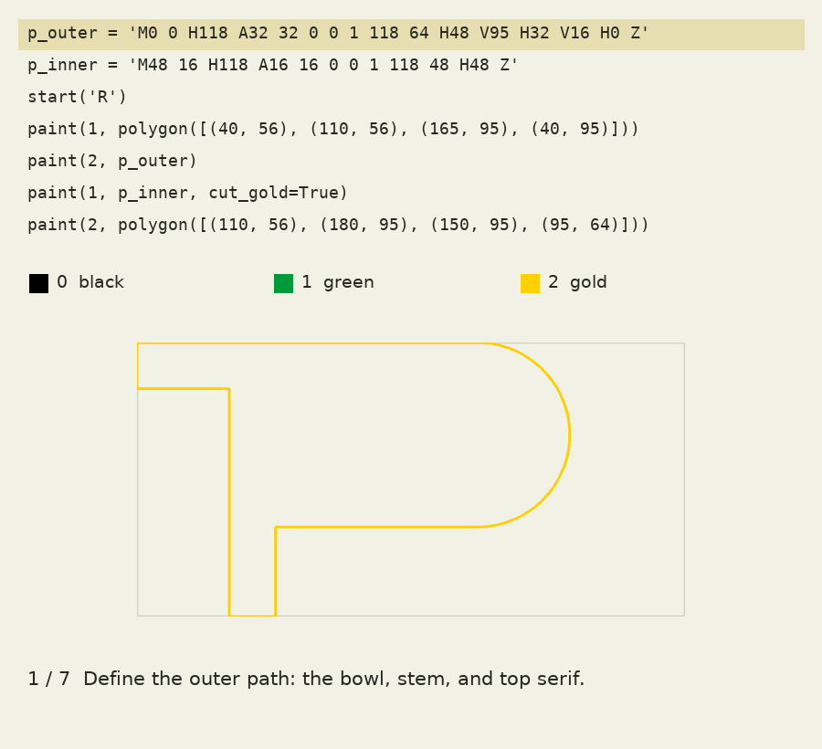
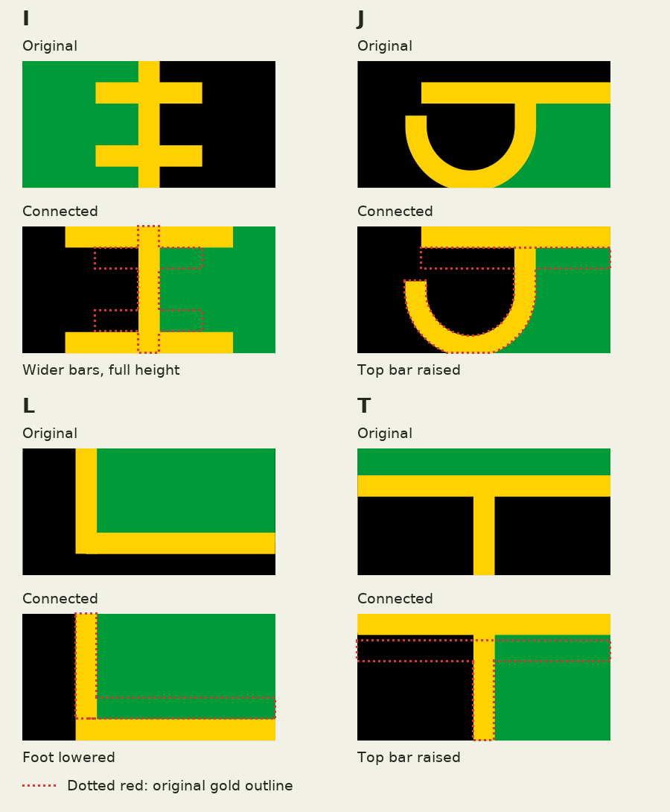
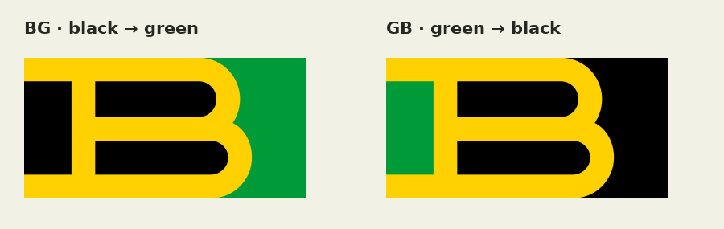
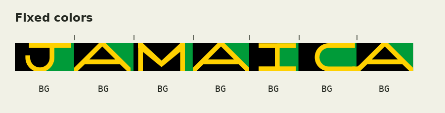
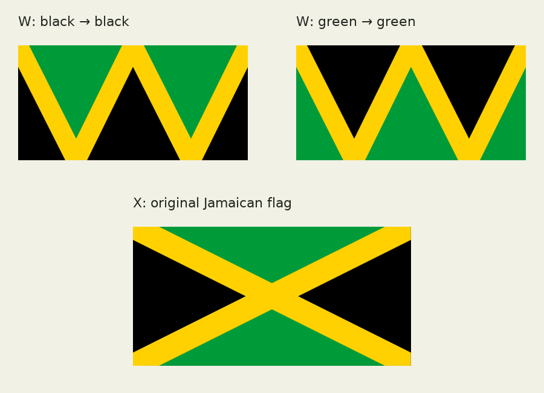
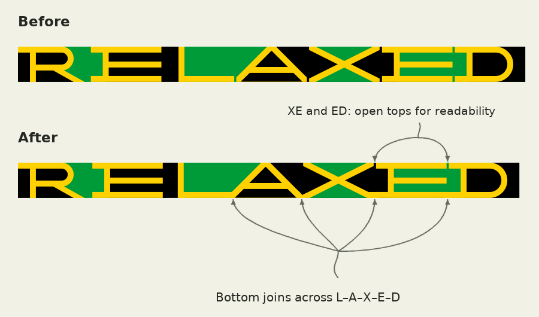
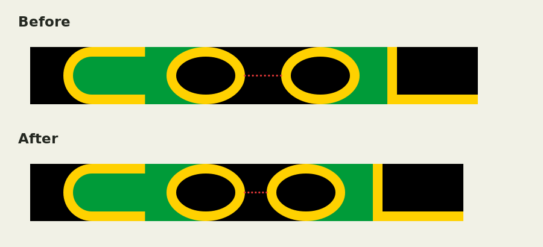
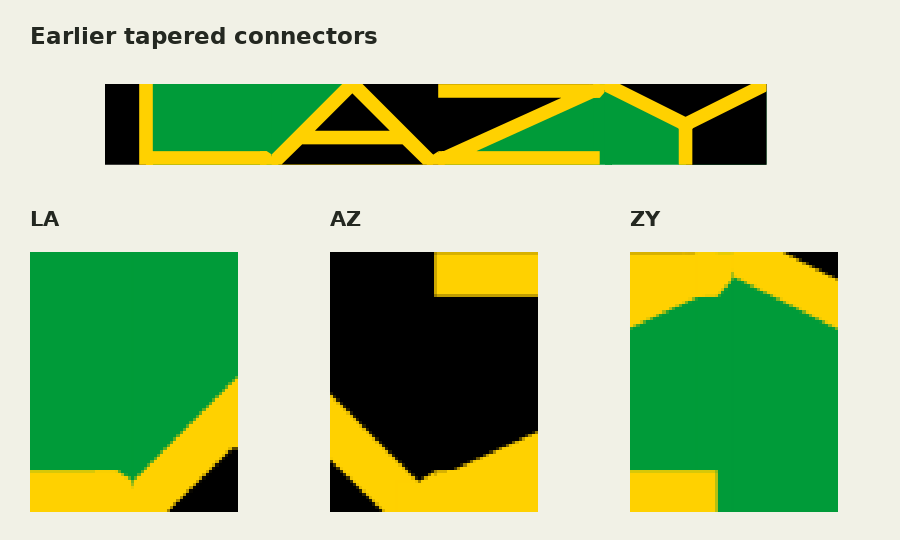
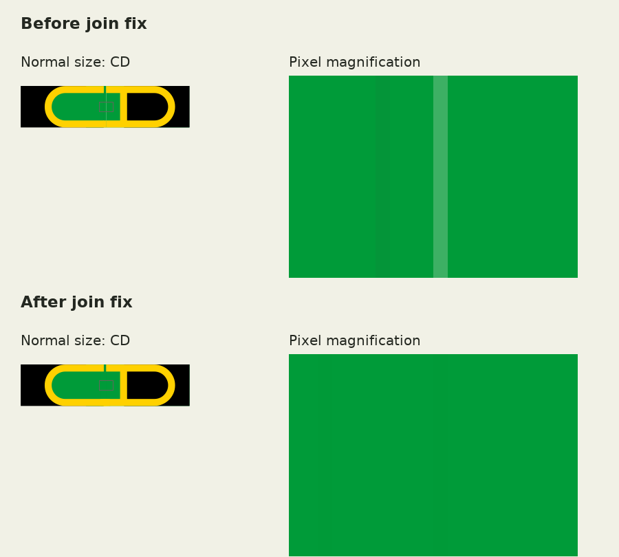
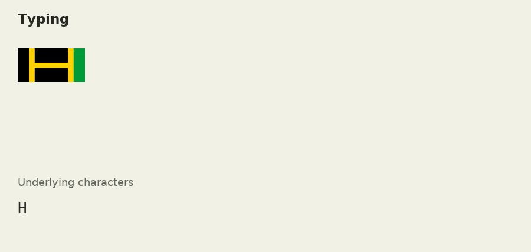

Each image is at most 900 pixels wide, with background #f1f1e6. Headings and captions are text outside the images; embedded text labels individual states and callouts.
R’s construction from src/geometry.py, with bowl(p_outer, p_inner) expanded into its two paint calls. Each highlighted line previews a path or applies a fill. The outer path is painted gold, then the inner path is painted green.

I, J, L, and T in the Original and Connected fonts at identical flag-core dimensions. Dotted red outlines on the Connected forms mark the original gold silhouettes.

B in BG and GB: the two forms selected for ordinary letters by automatic color matching. The gold outline stays the same while the incoming and outgoing fields swap colors.

Identical geometry and spacing in both states. Only the color choices change, matching each letter’s incoming field to its neighbor’s outgoing field.

W alternates across five regions and returns to its incoming color. X always keeps the original flag.

Before: uniform six-design-pixel gaps with incoming join and overlap forms omitted. After: complete contextual shaping and optical spacing. A shared curved arrow marks all bottom joins across L–A–X–E–D; the upper arrow marks the open XE and ED top corners that preserve readability. The color choices stay fixed.

Before and after the OO pair-spacing adjustment. Only the first O’s advance changes, from 950 to 830 font units: the second O moves 24 design pixels closer. Red dotted lines span the gold-to-gold gap in both rows. Colors, glyph forms, and the other pair adjustments stay fixed.

Actual earlier tapered font versus the finished full-stroke overlaps. Enlargements show the LA, AZ, and ZY intersections.

Same text, 127 px/em, and 0.125 px horizontal origin before and after fixing the hairline gap. Nearest-neighbor enlargements preserve the individual pixels.

Illustrated typing, selection, and copy sequence, rendered from actual HarfBuzz-shaped text. The gap between HELLO and JAMAICA is half a flag’s height. This is an illustration rather than a browser recording.
